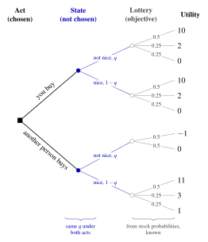
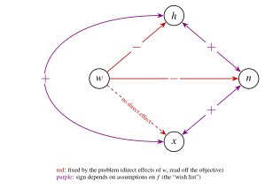

November 17, 2026
These notes document what was covered in the tutorial session, for the benefit of future TAs. They are not intended as study material for students.
November 10 was a statutory holiday, so there was no tutorial that week, and this session was organized around the gap. Subjective expected utility would normally have a dedicated session with several worked examples. Here it was compressed into one example at the start of a session otherwise devoted to monotone comparative statics.
Three segments. (i) Subjective expected utility through one small decision problem, used to separate acts, states, objective probabilities and subjective probabilities. (ii) Monotone comparative statics with increasing differences, applied to a monopolist’s price and a driver’s choice of speed. (iii) Comparative statics with several choice variables, for a firm choosing an input, a number of workers and hours per worker.
The monopolist and the driver are standard problem-set exercises. The firm problem is a comparative-statics question from a past final exam. The figures at the end are reference sketches.
The first segment is about conceptual clarity. Students should leave able to set out a decision problem and say which elements are acts, which are states, which probabilities are objective and which are subjective, and how to tell them apart. The example is only a vehicle and can be changed freely.
The second and third segments share one thread. Comparative statics concerns the maximizer, not the maximum, so the objective may be transformed in any way that preserves the maximizer, by taking logs, dividing by a positive function of the parameter, or dropping terms that do not involve both the choice and the parameter. The skill is to transform until increasing differences is visible, rather than giving up when the original cross-partial is ambiguous. With several choice variables the same idea needs a picture of how the choices feed into one another, and that picture is the main thing the third segment teaches.
Subjective expected utility. A pizza shop may stock a classic Italian capricciosa (utility 10), a pepperoni (2) and a durian and mango “fruit platter” (\(-1\)), each independently with probability \(1/2\). The agent buys herself or lets another person buy. A nice buyer chooses as she would and spares her the trip, worth one extra unit. A mean buyer picks the worst pizza possible. Figure 1 is the tree to draw. Whatever example is used, the explanation must get three things across.
What stays fixed and what can change. Objective probabilities, and even utilities, may depend on the state, but the subjective probability of a state may not depend on the act. In Figure 1 the same split with the same \(q\) sits under both acts, and under buying herself the state is simply payoff-irrelevant. Give students a test for each label. An act is something the agent can pick. A state is not chosen but affects the consequence. A probability is objective if it is a feature of the environment and subjective if it can only be the agent’s own assessment.
Once the distribution over states is known, the problem reduces to a simple choice under risk. Each act is an ordinary lottery, here worth \(5.5\) for buying herself and \(-0.5q + 6.5(1-q)\) for letting the other person buy. Uncertainty about \(q\) itself changes nothing, since expected utility is linear in \(q\) and only \(\mathbb{E}[q]\) matters.
The question students are most likely to meet is what can be said about \(q\) given observed choices over acts. Here letting the other person buy reveals \(q < 1/7\), and buying herself reveals \(q \geq 1/7\). The threshold was not worked out in the tutorial but is the natural way to end the example.
Increasing differences. Two points to stress beyond the definition. First, \(x''\) and \(x'\) in the definition are arbitrary points, not maximizers, and students who read them as optimal choices find the theorem circular. Second, the board tied the result to Tutorials 8 and 9. An easy way to show that \(x^*\) increases in \(\theta\) is to evaluate the first-order derivative under \(\theta''\) at \(x^*(\theta')\) and sign it, which is the variational argument used there for prudence and risk aversion, and increasing differences is simply an easy way to sign that derivative. The connection was pointed out rather than worked through. This smooth argument needs concavity in the choice, which the general theorem does not, and that is worth saying.
Three remarks went with the definition. Increasing differences is sufficient, not necessary. A monotone transformation of the objective may have it when the original does not. Terms that do not involve both the choice and the parameter drop out of the cross-partial. For a decreasing relationship, use increasing differences in the choice and minus the parameter.
The monopolist. Taking logs of the profit \((p-c)Q(p,\theta)\), which is allowed where profit is positive, the first term does not involve \(\theta\) and \[\frac{\partial^2}{\partial p\,\partial\theta}\Big[\log(p-c) + \log Q(p,\theta)\Big] = \frac{\partial}{\partial\theta}\left[\frac{Q_p(p,\theta)}{Q(p,\theta)}\right],\] so the price rises with \(\theta\) if \(Q_p/Q\) is nondecreasing in \(\theta\). The board called this the elasticity of demand. Strictly it is the semi-elasticity, but since \(p\) is positive and does not depend on \(\theta\), the condition is equivalent to demand becoming less elastic as \(\theta\) rises, which is the form in which the condition is usually stated. Say so explicitly, or students will think these are different conditions.
The driver. The objective is \[f(w,s) = w\left(T - \frac{d}{s}\right) - g(s) - p(s)\,(L + \tau w),\] where \(T\) is the hours available for commuting and working, \(g(s)\) the gas cost, \(p(s)\) the accident probability, \(L\) the damage and \(\tau\) the hours lost to an accident. The cross-partial in \((w,s)\) is \(d/s^2 - p'(s)\tau\), which cannot be signed, since driving faster saves commuting time but raises the expected time lost. Dividing by \(w\) preserves the maximizer, after which \(T - d/s\) and \(p(s)\tau\) no longer involve \(w\) and \[\frac{\partial^2}{\partial s\,\partial w}\,\frac{f(w,s)}{w} = \frac{g'(s)}{w^2} + \frac{p'(s)\,L}{w^2},\] which is positive because \(g\) and \(p\) increase with speed. So speed rises with the wage. The intuition is that dividing by \(w\) measures everything in hours, and the money costs of speed fall in hours as the wage rises. This is the example that shows students transforming the objective is a method and not a trick.
Several choice variables. The firm solves \[\max_{x,\,n,\,h}\ f(x,n,h) - px - wnh - bn,\] where \(b\) is the benefit cost per worker. For benefits and for total hours, follow the standard solution. Maximizing out \(h\) and \(x\) leaves \(b\) interacting with \(n\) only through \(-bn\), so \(n\) does not increase with \(b\), with no assumption on \(f\). Reparametrizing with total hours \(H = nh\), the wage interacts only with \(H\) through \(-wH\), so total hours do not increase with \(w\), again with no assumption. This is why total hours appear on the board.
The effect of \(w\) on \(n\) itself is harder, and the board handled it with Figure 2. The direct effects of \(w\) on \(n\) and on \(h\) are negative and fixed by the objective (the cross-partials are \(-h\) and \(-n\)), and \(w\) has no direct effect on \(x\). The links between the choice variables have signs that depend on \(f\). If all are positive, every indirect path from \(w\) to \(n\) has the same sign as the direct effect, and no comparison of magnitudes is needed. The trick stated on the board was that with loops, positive links are preferred, because the sign of a positive loop does not depend on how many times it is traversed. The discussion ended at making sure there are enough assumptions for increasing differences in all the relevant pairs. Written out, the wish list is \(f_{xn} \geq 0\), \(f_{xh} \geq 0\) and \(f_{nh} \geq w\), under which all three choices fall with the wage. The contrast with total hours, which need no assumption at all, is worth pointing out.
Subjective expected utility is compressed here because of the holiday. In a normal year it gets its own session with several worked examples, and this example can serve as the first of them. The driver example should not be cut, and Figure 2 should be drawn in full, since the graphical treatment of several choice variables is the most important thing in the third segment.
A future TA should check whether a problem set covering this material is live and, if so, treat the related material as method rather than as solutions.

